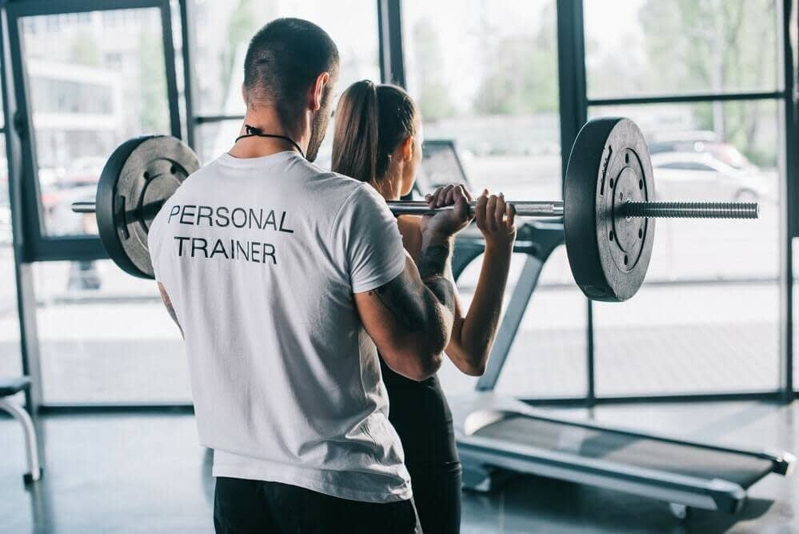

Personal Trainer
Formación orientada a quienes desean adquirir conocimientos para planificar y acompañar procesos de entrenamiento. Se trabajan fundamentos del ejercicio, planificación de rutinas y adaptación de las propuestas a diferentes objetivos y niveles
Duración:6 meses
Modalidad: Híbrida (teoría a distancia y prácticas presenciales)
Días y horarios disponibles: Martes y jueves de 09:00 a 11:00hs o de 18.00 a 20.00hs